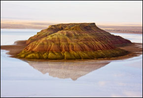
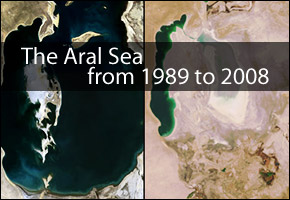
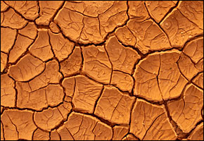

New life for dry sea

KOK ARAL, Kazakhstan – There is not a drop of water to be seen around the port of Aralsk — a silent testament to decades of Soviet experiments with nature that have turned the Aral Sea, once the world’s fourth largest lake, into a salt-encrusted desert.
Read more here.
Source : Reuters
Posted On: 2008-07-02T00:00:00
Posted By: Circle of Blue


Content Date: 2008-07-02
Download Date: 2021-05-12
Document ID: L0C04BHA2